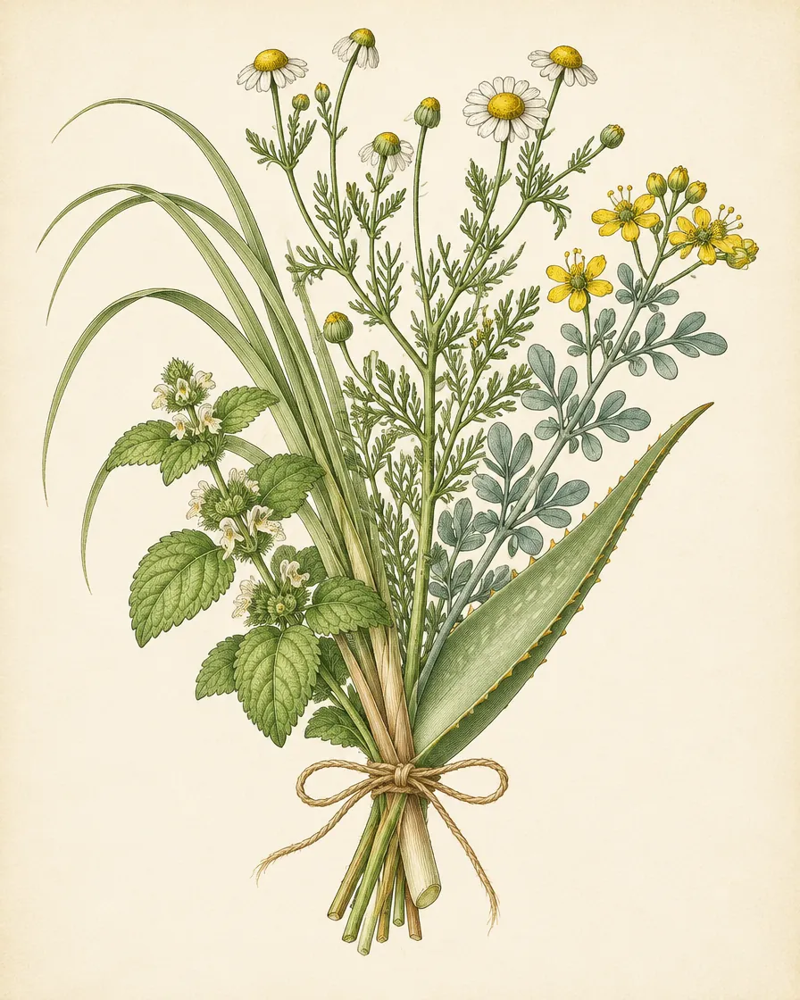
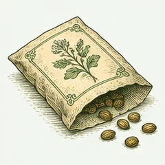
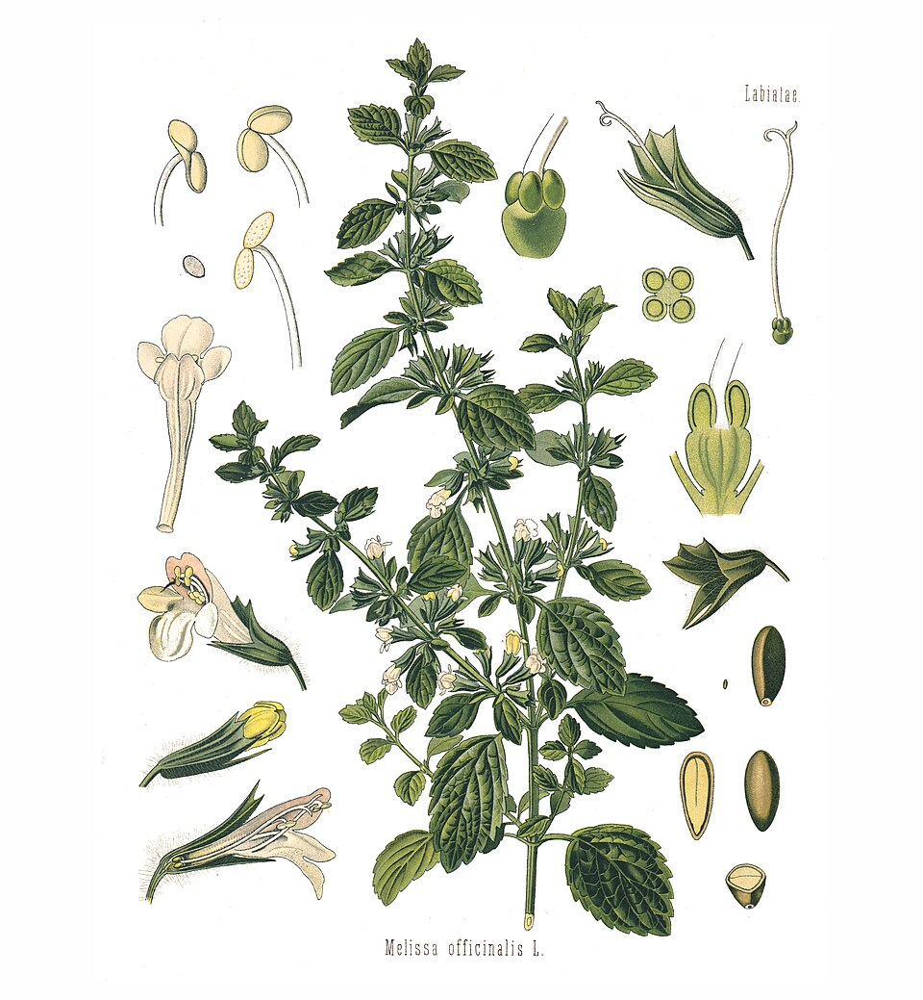
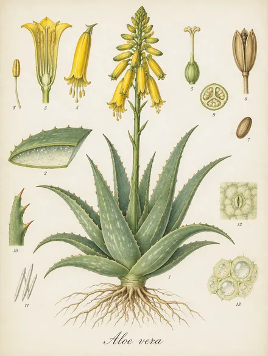
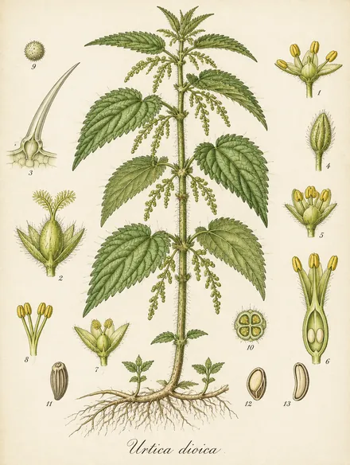

Huerto demostrativo Sumak Kawsay
Comunidad demostrativa Sumak Kawsay
- Provincia
- Pichincha
- Parroquia
- Tumbaco
- Plantas
- 4
- Cultivos
- 4
Maqueta A · «La etiqueta de la planta seca», evolucionada · datos reales de la demostración · no es la app
Cada huerto comunitario, con sus plantas, su fuente y lo que siembra según la luna. Elige uno en el mapa para leer su etiqueta.

Comunidad demostrativa Sumak Kawsay

Familia demostrativa Hampi · aún no registra plantas
Barrio demostrativo Jambi Muyu · aún no registra plantas
Evolución: un «cajón de especímenes» con cada lámina al mismo tamaño. Lleva a una ficha de especie (posible pantalla nueva, fuera de la versión 1).


